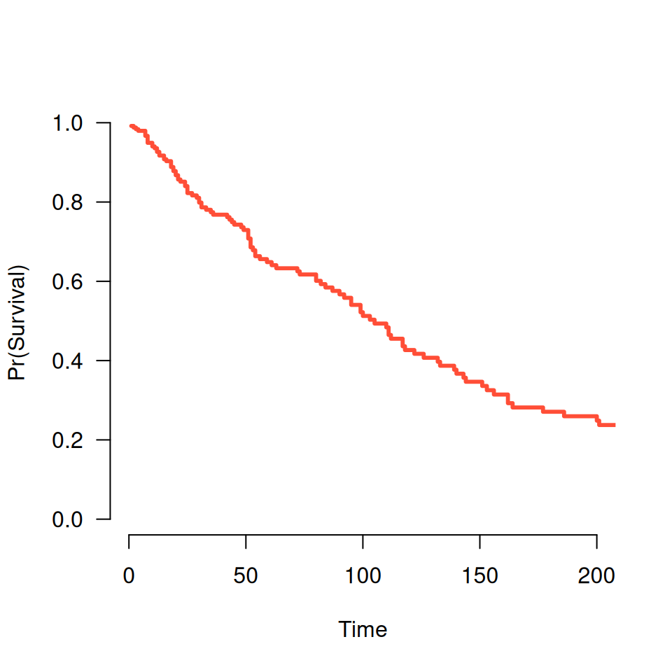
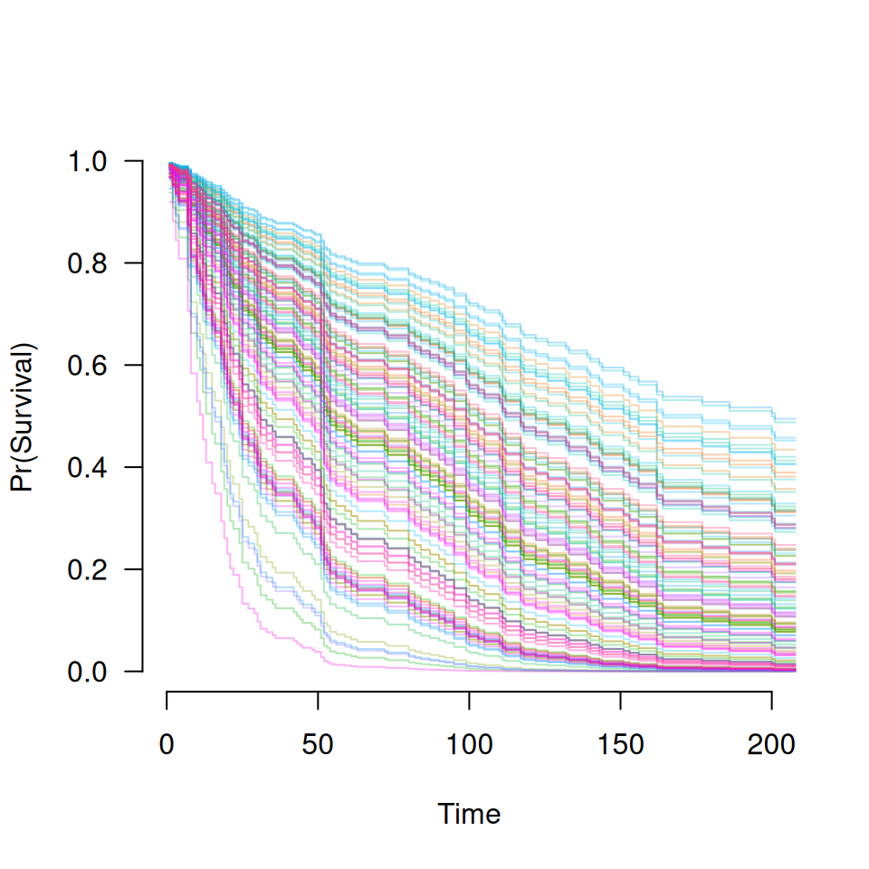

Plot survival curve for a model that has been fit using grpsurv
followed by a prediction of the survival function using
predict.grpsurv
Usage
# S3 method for grpsurv.func
plot(x, alpha = 1, ...)Arguments
- x
A
'grpsurv.func'object, which is returned bypredict.grpsurviftype='survival'is specified. See examples.- alpha
Controls alpha-blending (i.e., transparency). Useful if many overlapping lines are present.
- ...
Other graphical parameters to pass to
plot
Examples
data(Lung)
X <- Lung$X
y <- Lung$y
group <- Lung$group
fit <- grpsurv(X, y, group)
# A single survival curve
S <- predict(fit, X[1,], type='survival', lambda=.05)
plot(S, xlim=c(0,200))

# Lots of survival curves
S <- predict(fit, X, type='survival', lambda=.05)
plot(S, xlim=c(0,200), alpha=0.3)
